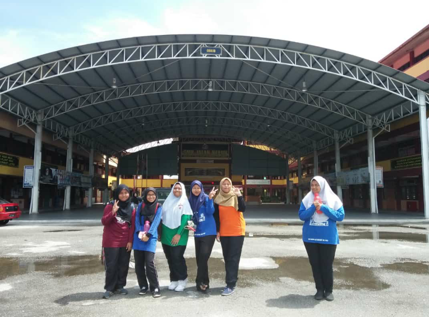
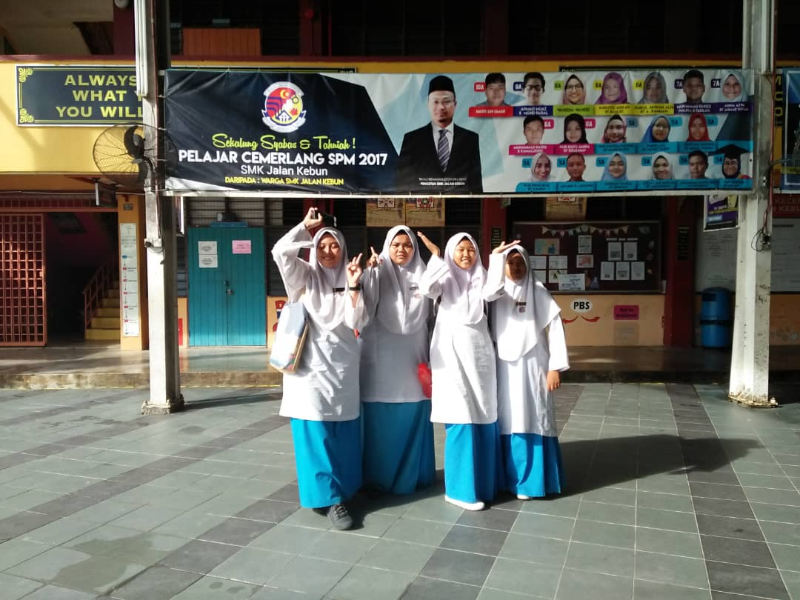
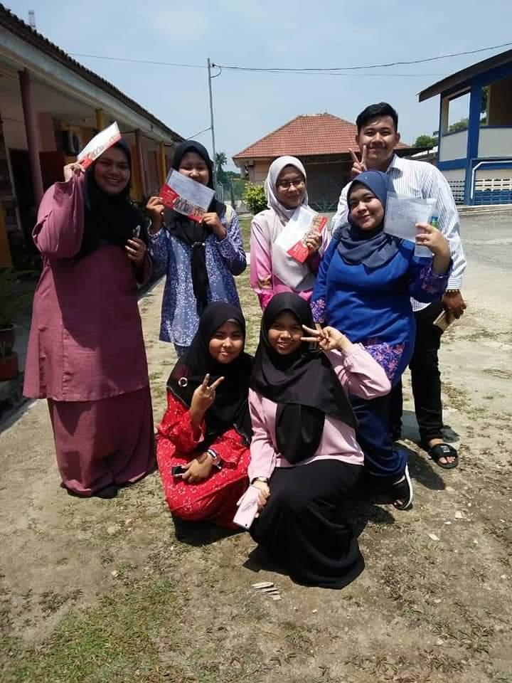
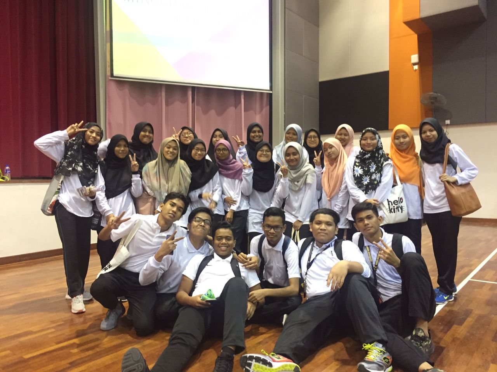
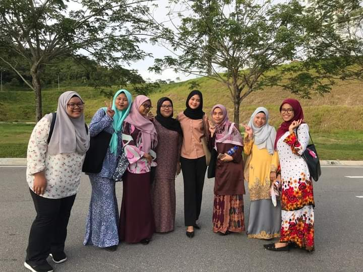
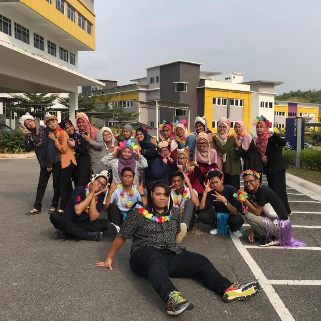

I WILL SHOW YOU A LITTLE BIT ABOUT MY SCHOOLS
💗
💗
I have been through my studies
in three places starting from primary school, secondary school and university.
| YEAR | PLACE |
|---|---|
| 2006 - 2007 | TABIKA KEMAS |
..............
| YEAR | PLACE |
|---|---|
| 2008 - 2013 | SEKOLAH KEBANGSAAN JALAN KEBUN |
I attended this school from grade 1 to grade 6. Here I could meet good friends. One of my friends during standard school is still my friend until right now.
A little history about this school is that this school was built before 31 August 1957, before Malaya gained Independence. However, the name of this school was changed to Jalan Kebun Public School after 31 August 1957 and then changed to Sekolah Kebangsaan Jalan Kebun until today.
..................
| YEAR | PLACE |
|---|---|
| 2014 - 2018 | SEKOLAH MENENGAH KEBANGSAAN JALAN KEBUN |
After the PT3 exam Alhamdulillah I got very excellent results for me because I am not an excellent student. During form 4 I was placed in economics and business stream classes. Yes, this is the class I really want. But, that’s not the only reason I was happy to be placed in that class bu I got the same class as my good friend who was from 6th grade after we weren’t in the same class for a year.
Let me show you some pictures of me when I was in form 5
Now let me tell you about the picture. This picture was taken in 2018 when I was in Form 5. When I was in form 4 and 5 I was in economics stream class. Although there are some people who think that our class is a medium class that is only for students who are less intelligent but for me each stream class has its own specialties according to the subject they choose.
Start from the left is when me and my friends attend extra classes to face Sijil Pelajaran Malaysia (SPM) and Alhamdulillah our efforts are not in vain and
we are all pursuing studies in higher education and InshaAllah always to achieve the ambitions we dream of .
This middle picture is during the last day we answered the SPM exam and we spent some time
because we knew after this we would rarely meet and it was true because everyone was busy with lectures.
But we still contact each other.
The picture on the right is during the day the SPM results came out.
Alhamdulillah, all are satisfied with the results they obtained, comparable to their efforts.
After that, most of us continue to find the course of interest and meet the criteria of the results obtained.
Everyone was pretty happy with what they got.



Here, I learned many things, spent my adolescence in school, learned about academics, sports, the meaning of friendship, love and more. To be honest I really miss school even though I just left school about 3 years ago. Too many bittersweet memories at the school even though it was only 5 years of school there. If given the choice of either primary school, secondary school or higher education, I will choose to study in secondary school because it is too meaningful at that age. No need to bother thinking about finances, jobs or heavy things. But life still has to go on!!!
Okay, now we focus on the next one .....

Next we can see the map above. if we click on the Negeri Sembilan section you will go to my university website. I continued my studies at Universiti Teknologi MARA Negeri Sembilan branch of Rembau Campus.
UNIVERSITI TEKNOLOGI MARA (UiTM) CAMPUS REMBAU
I've included some photos during my time at UiTM Negeri Sembilan in this blog. I only stayed in Negeri Sembilan for approximately a semester since Covid-19 struck in the second semester. As a result, we studied at home for four semesters. Isn't it sad? But that's fine; I prefer to study at home rather than in an university because I obtain more favourable outcomes and save money.


